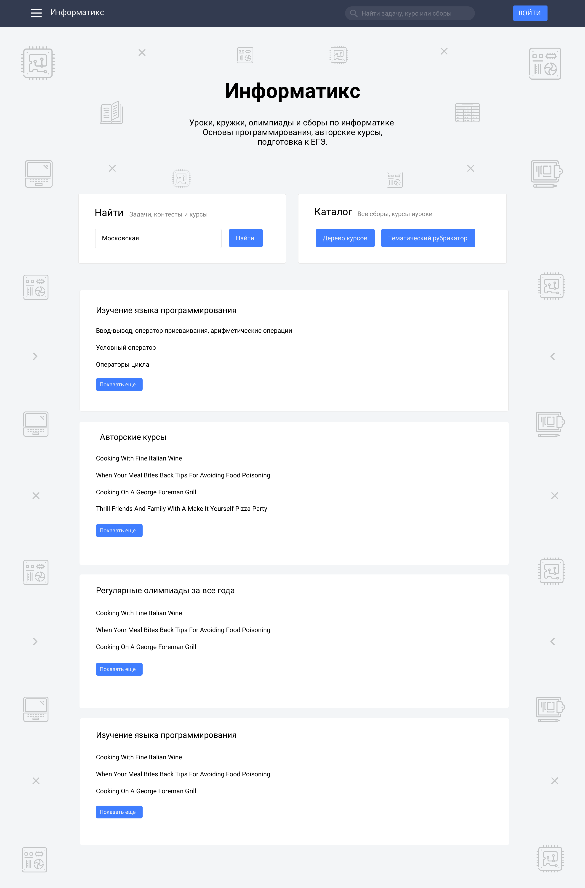
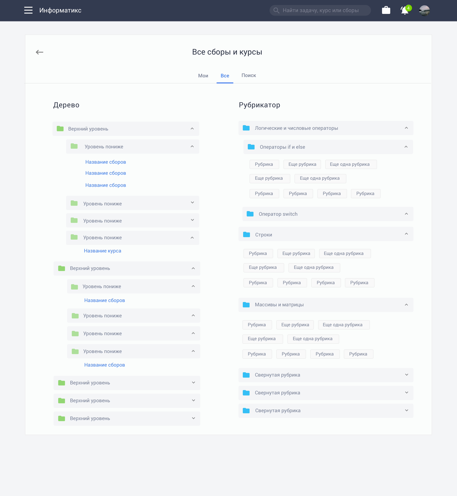
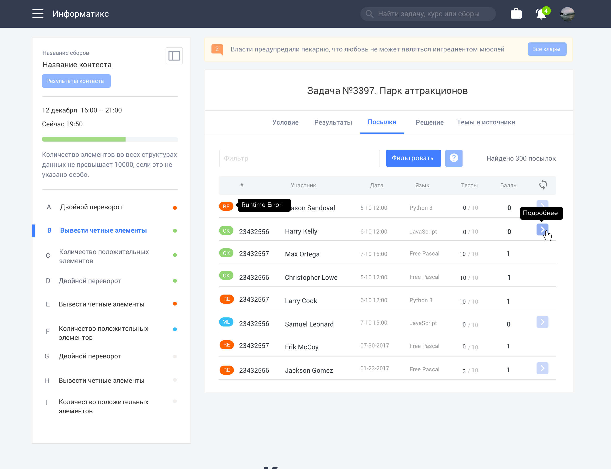
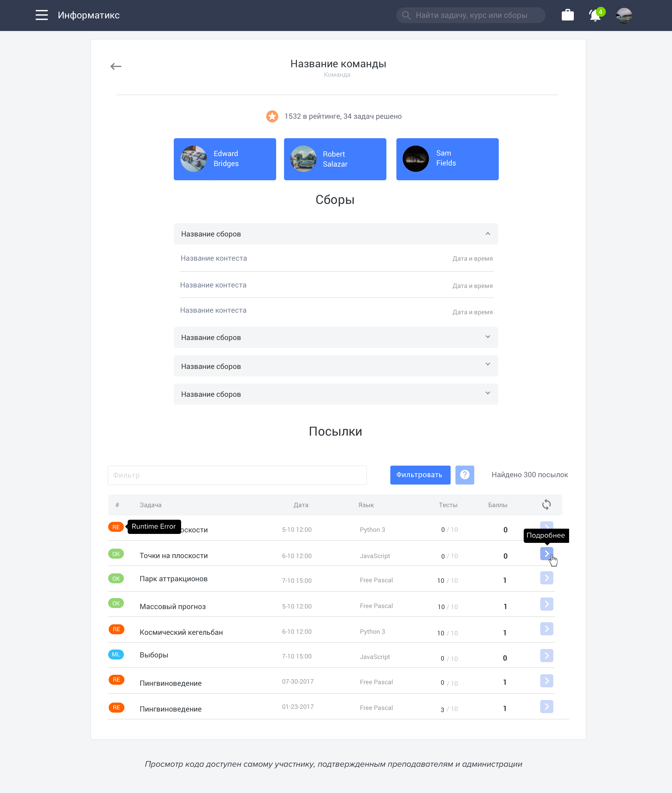
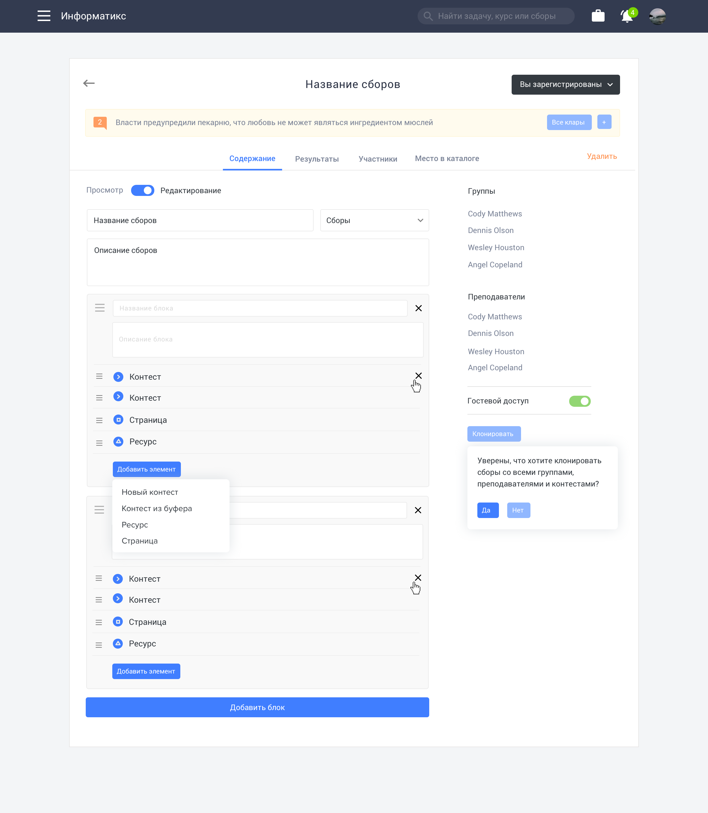
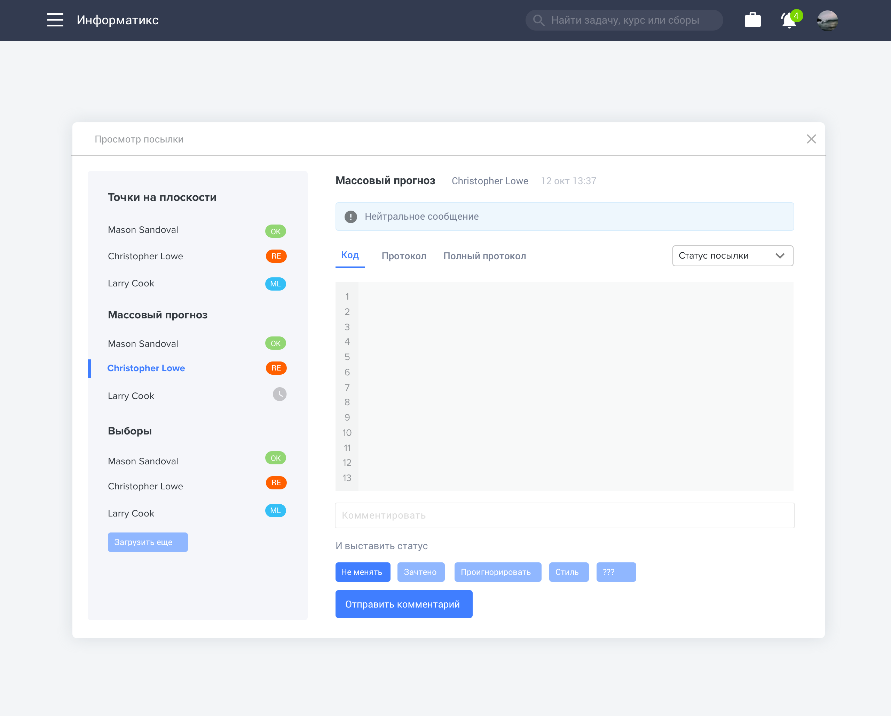
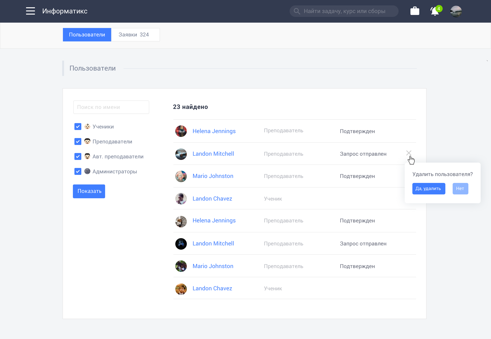
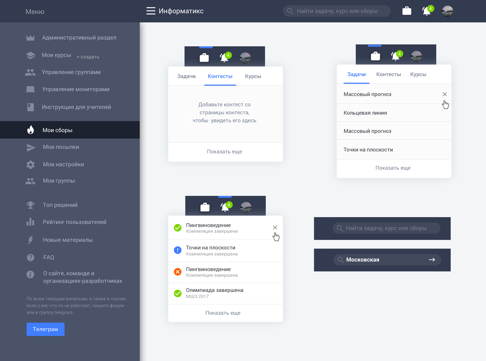

Информатикс – Сборы и олимпиады по информатике
Меня пригласили сделать редизайн платформы, на которой преподаватели всей страны готовят школьников к олимпиадам по информатике. В рамках одного проекта проводятся выездные сборы и виртуальные олипиады, создаются и проводятся курсы по изучению языков программирования.
Моей задачей было обновить интерфейс (впервые с момента запуска сайта 10 лет назад), убрать лишнее, упростить для преподавателей создание и управление курсами и олимпиадами, для школьников сделать отправку кода и просмотр результатов более быстрой.
 





